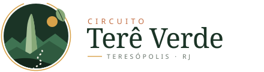
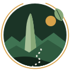

Diretrizes visuais do site do Circuito Terê Verde, em Teresópolis. Inspirado em luz de montanha, névoa matinal e Mata Atlântica: paleta natural, serifa orgânica e muito respiro.
O símbolo une o perfil do Dedo de Deus, a serra em camadas, o sol da manhã e uma trilha pontilhada. O anel dourado aberto lembra um circuito que se percorre, e a folha ancora a identidade na mata.


Área de respiro: metade da altura do símbolo em todos os lados. Tamanho mínimo: 28 px de altura (símbolo) / 120 px de largura (horizontal). Use a versão clara apenas sobre Floresta 700–900 ou fotos escurecidas. Não distorcer, girar ou trocar as cores.
Verdes profundos como base, névoa azulada para respiro, terracota e âmbar como acentos quentes de pôr do sol. Fundos claros em tons de pedra, nunca branco puro.
Fraunces (eixo SOFT em 100) dá curvas macias e calorosas aos títulos. DM Sans traz leitura limpa para texto e rótulos. Eyebrows e botões em caixa alta com tracking aberto.
Do alto da Serra dos Órgãos aos vales de Mata Atlântica, roteiros pensados para quem busca natureza de verdade.
O Circuito Terê Verde conecta propriedades rurais, trilhas, cachoeiras e sabores locais de Teresópolis, valorizando quem cuida do território e quem o visita com respeito.
Botões em pílula com contorno fino, cards com foto e gradiente floresta, campos suaves. Cantos arredondados moderados e sombras esverdeadas.
Gradientes são placeholders; use fotos reais com o overlay --overlay-forest.
Escala de espaçamento base 4 px, container de 1200 px, movimento suave (280 ms, ease-out).